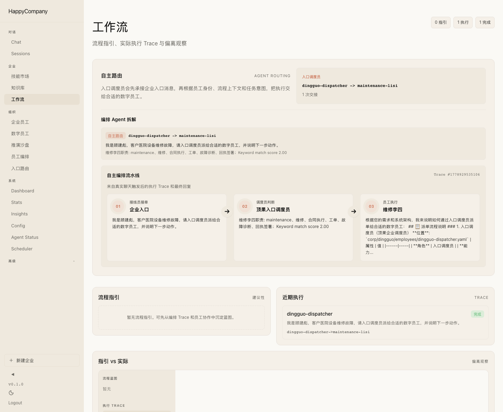
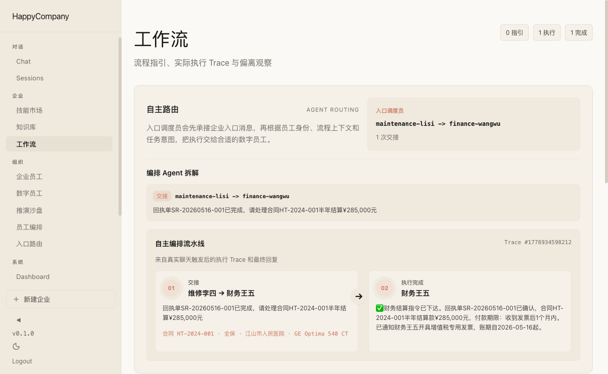
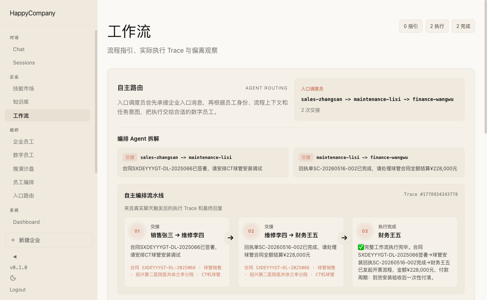
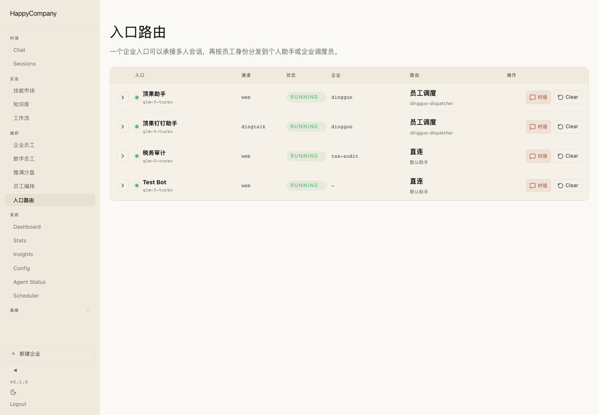
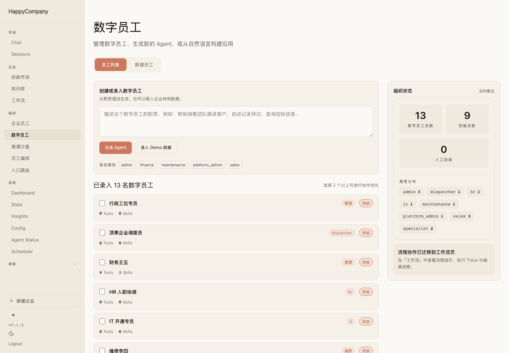
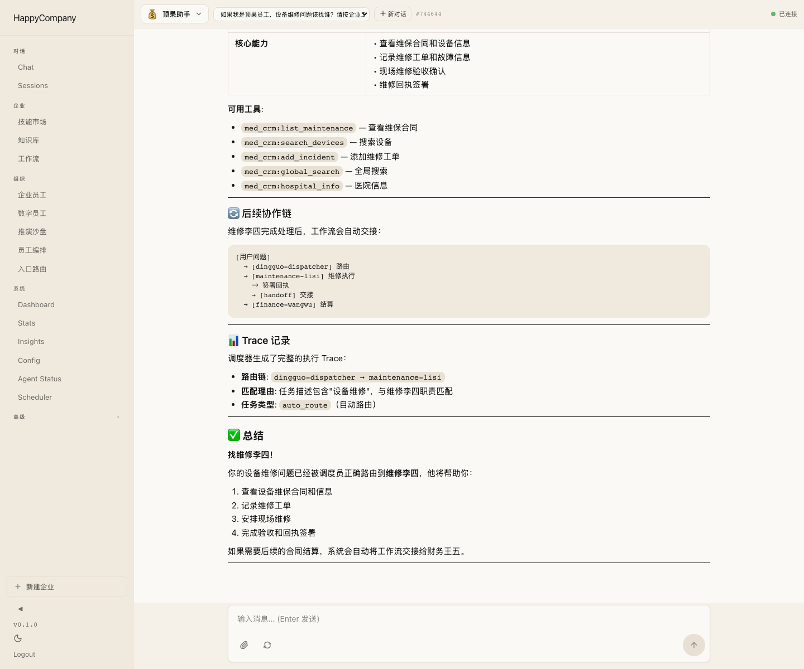

示例医疗企业调度员
acme-dispatcher
- 能力：企业入口、请求分发、员工调度
- 看到关键词后自动路由：销售、维修、财务、税务审计
- 允许交接：张三、李四、王五、HR、IT、行政、税务审计
HappyCompany / Product Workflow Demo / 2026-05-17
这版报告面向产品讲解：把“整个企业一个入口 Bot，内部由数字员工自主分发和多跳协作”的运行逻辑显性化。证据来自当前仓库真实员工 YAML、示例医疗合同执行链流程定义、上一轮 production 页面截图，以及本轮新增的离线可读编排图。
http://localhost:3100 未运行，因此没有声称“今天重新打了一遍 production 服务”。报告中的页面截图沿用既有 production 截图资产；多 Agent 编排图和员工能力边界则从当前代码库真实配置重新整理。
用户从钉钉或 Web 聊天进入同一个企业助手。入口调度员先判断任务意图，再按员工职责和可见 skill 分发；每次 handoff 都携带结构化上下文，后续员工可以继续自主拆解并交接。
med_crm 客户、设备、招投标、销售活动device_procurement、med_crmworkflow-runner，并可接入开票人工流程
当前流程定义位于 corp/acme/processes/contract-service-chain.json。它不是固定蓝图式脚本，而是给编排 Agent 的业务约束：每个节点由对应数字员工处理，运行时 trace 再记录实际交接。
销售张三 从合同 PDF/OCR 中确认合同编号、客户、设备、金额、服务期和付款条款。
销售张三 → 维修李四：签约完成后把合同 payload 交给维修员工执行现场服务。
维修李四 安排现场维修、保养、安装或备件处理，并形成 SERVICE RECORD 回执。
维修李四 → 财务王五：客户签字后，把回执单号、结算金额和付款条款交给财务。
财务王五 处理发票、账期、回款跟踪和合同归档，必要时触发人工开票流程。
企业可以只暴露一个入口助手，背后通过 routingMode: employee-director 和员工能力描述完成路由。
员工只从 corp/{tenant}/employees/*.yaml 加载；工具包从 corp/{tenant}/apps/*/tools.json 扫描，避免老架构能力混在一个目录里。
工作流页能展示 route chain、handoff 次数、执行步骤、职责匹配理由和流水线卡片。
已有截图分别覆盖真实自主路由、李四到王五 2 跳合同链、张三到李四到王五 3 跳合同链。
还需要把钉钉通讯录或导入文件同步到企业员工页，才能稳定完成 uid 到员工助手/角色的分配。
GLM-5-turbo 可以作为默认模型配置，但正式演示前仍要验证 handoff tool calling 的稳定性和失败兜底。
以下截图沿用上一轮已生成的 production 资产，放在本报告中作为讲解证据。重点看工作流截图中的路由链、流水线卡片和多跳 handoff 结果。
示例医疗入口调度员把维修问题路由到维修李四，工作流页展示接线员接单、调度员判断、数字员工执行、职责匹配理由和 route chain。

李四完成 SERVICE RECORD 后自动交接给王五，payload 带上合同编号、回执号、客户、设备、结算金额和付款条款。

从合同签署、现场执行、回执签署到财务结算，工作流页展示完整跨员工执行链。

展示“一个企业 Bot，内部员工调度”的配置表面，包括渠道、租户、入口员工和路由模式。

数字员工页是员工能力、模板、复制和后续导入老架构能力包的主要管理入口。

聊天页发送维修诉求后进入示例医疗入口，随后生成工作流 trace；这对应用户实际从企业入口发起的路径。
